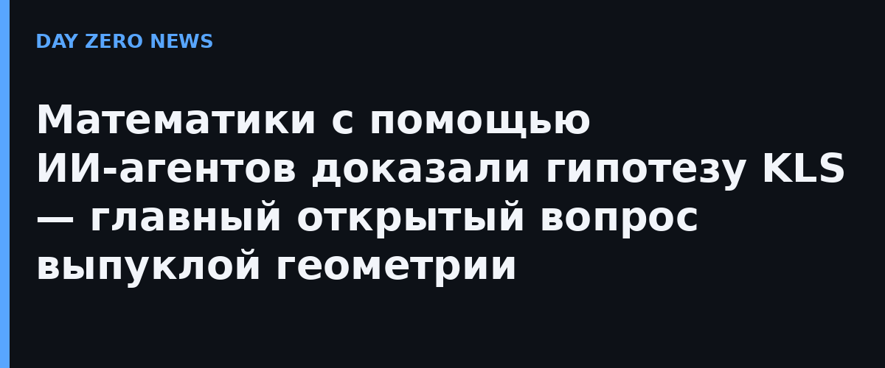

Гипотеза Каннана–Ловаса–Симоновитса (KLS) была выдвинута в 1995 году. Вопрос звучит так: если «разрезать» выпуклое тело в пространстве большой размерности пополам по объёму, то насколько плоский разрез хуже самого удачного разреза произвольной формы? Гипотеза обещала, что хуже — не более чем в фиксированное число раз, и это число не зависит от размерности. Ставили её высоко: математический институт MSRI называл KLS «центральным открытым вопросом выпуклой геометрии большой размерности», институт Симонса — «одной из важнейших открытых задач выпуклой геометрии».
Работу выполнили двое авторов: Синьчжи Чжан из группы машинного обучения и оптимизации Microsoft Research и его соавтор Чжао Сон. Они показали, что отношение площадей разрезов действительно ограничено универсальной константой при любой размерности. До этого лучший результат (июль 2026 года) допускал, что граница медленно растёт с ростом размерности. Работа выложена на arXiv (2610.01447); независимые математики проверили ключевой критерий доказательства, а затем оно прошло машинную формальную верификацию.
Microsoft подчёркивает: это не «модель сама всё решила». Использовался человеко-управляемый агентский процесс: исследователи ставили задачу, оценивали и отсекали ветви, а ИИ-системы генерировали и проверяли варианты. Всего исобследовали более 100 кандидатных подходов, многие с громоздкими вычислениями тензоров старших порядков. Именно из этой совместной работы вырос новый математический критерий, ставший фундаментом финального доказательства.
Геометрия разрезов определяет, как быстро случайное блуждание «обходит» распределение, — а это скорость работы рандомизированных алгоритмов, сэмплирования и MCMC-методов, на которых стоят байесовская статистика и машинное обучение. Практический вывод в терминологии Microsoft: пространства больших размерностей ведут себя «послушнее», чем считалось, и препятствия для навигации по ним не расходятся вместе с числом измерений. Отдельного анонса со стороны академических институтов-соавторов нет — официально новость опубликована только в блоге Microsoft Research.